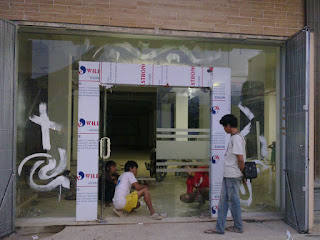

Kian berkembangnya dunia pembangunan, karenanya hadir banyak material penambah yang melengkapi estetika sebuah banguanan. Kaca semakin melengkapi bangunan supaya menonjol lebih menawan dan mempunyai nilai estetika bila di pandang orang. Kini telah hadir banyak macam kaca hingga lantai kayu jati yang bisa anda aplikasikan pada bangunan yang anda buat.
Ragam-jenis kaca diantara lain kaca tempered, kaca shower, railing kaca, kanopi kaca Blitar dan masih banyak lagi. Setiap kaca mempunyai fungsi masing-masing yang membuat banyak orang semakin mebutuhkannya dari hari ke hari. Berikut ini sedikit penjelasan mengenai bermacam-macam macam kaca dan fungsi kaca dan juga parket lantai kayu jati yang dapat anda peroleh.
Distributor, Supplier & Jasa Pasang Kanopi Kaca Blitar

Pintu Kaca Shower pada kamar mandi yaitu salah satu opsi yang baik untuk desain interior kamar mandi modern. Seiring dengan perkembangan zaman di dunia properti, kini kanopi kaca Blitar terlah berkembang cepat meniru arsitektur modern . Dan sensasi mandi menjadi lebih asik untuk dinikmati. Pelaksanaan ini memang desain shower berbahan kaca memang lebih banyak digunakan daripada desain shower berbahan tirai. Ada banyak alternatif varian desain. Kalau tembus pandang, kaca menyerap cahaya yang masuk sehingga semakin tebal kaca maka semakin sedikit cahaya yang dapat melaluinya, maka sifat transparannya makin berkurang.|Di samping pintu kaca shower akan membuat kamar mandi kecil kelihatan lebih besar. Atap akrilik atau dapat juga disebut atap kaca acrylic ini banyak ditemukan di sebuah bangunan rumah, seperti ruko, apartemen, restoran, mall, sampai bangunan gedung.
Disana anda bisa menerima atap kanopi kaca Blitar dengan kualitas terbaik dan harga terjangkau. Dis.or.id juga menyediakan jasa pemasangan kanopi kaca Blitar yang tentunya dengan bantuan tenaga professional yang telah berpengalaman. Disana anda akan mendapat kanopi kaca Blitar yang sesuai dengan beraneka ketebalan dan harga yang cukup terjangkau.
Info Lengkap Pemesanan
Google Maps: https://www.google.com/maps/d/u/0/viewer?mid=12-N5cMmHbEOEG6n-94L4JatnBnNRTFkr&ll=-7.27380280025364%2C112.65243155000007&z=18
Note: https://www.facebook.com/notes/distributor-of-industrial-supply/kontraktor-jasa-pasang-kanopi-kaca/1785710151728864/
Event: https://www.facebook.com/events/227495344457982/
Portfolio Produk: https://www.facebook.com/1681607345472479/photos/?tab=album&album_id=1712629809036899
Distributor & Supplier Kaca Shower

Anda pastinya meninginkan desain kamar mandi rumah layaknya kamar mandi hotel berbintang yang menerapkan kamar mandi duduk serta dilengkapi shower ataupun bath tub. Salah satu sistem yang bisa dipakai untuk menghasilkan kamar mandi yang senantiasa bersih ialah menerapkan shower karena sistem pembersihannya memang jauh lebih praktis dibanding dengan yang menggunakan konsep bak mandi. Kaca shower ini bisa menjadi dan mempunyai skor keindahan tersendiri sebab dengan memasangnya tentu kamar mandi anda akan kelihatan lebih menawan dan mewah layknya kamar mani hotel. Tidak cuma cantik melainkan kaca shower dapat menjadi kaca pembatas antara lantai kering dan basah pada kamar mandi. Tentunya banyak kelebihan yang bisa di dapatkan dari penerapan kaca shower pada kamar mandi di rumah anda. Kecuali ini akan berpengaruh kepada tarif yang akan dikeluarkan untuk membayar tukang.
Tak anda sedang mencari kaca shower untuk kamar mandi, anda dapat seketika mengunjungi dis.or.id. Anda bisa buktikan sendiri.
Distributor, Supplier & Jasa Pasang Kanopi Kaca

Kalau akan memberikan kesan lapang dikala berada di kamar mandi, mandi dengan shower akan memberikan kesegaran tersendiri dibanding kamar mandi dengan bak mandi. Dan sensasi mandi menjadi lebih asik untuk dinikmati. Jadi telah tak heran lagi segala orang ingin mencari harga yang betul-betul kompetitif untuk menyesuaikan budget atau anggaran mereka masing – masing untuk membuat produk canopy kaca. Disinilah letak perbedaan optis yang utama antara akrilik (acrylic) dengan kaca. Jika tembus pandang, kaca menyerap cahaya yang masuk sehingga semakin tebal kaca maka semakin sedikit sinar yang bisa melaluinya, karenanya sifat transparannya makin berkurang.|Di samping pintu kaca shower akan membuat kamar mandi kecil terlihat lebih besar.
Tak anda saat ini sedang membutuhkan kanopi kaca Blitar, anda bisa lantas mengunjungi dis.or.id. Terdapat banyak kanopi dengan bermacam ukuran dan ketebalan yang bisa anda pilih layak dengan yang anda butuhkan. Jikalau itu, kanopi juga dapat melindungi mobil dan kendaraan lain anda. Banyak bangunan seperti gedung perkantoran, perumahan, ruko dan apartement yang menerapkan kanopi kaca Blitar tempered. Sekiranya fungsi utama kanopi sebagai pelindung untuk bangunan hal yang demikian, pemasangan kanopi kaca Blitar juga bisa membikin bangunan menjadi menonjol lebih menawan dan menarik, apalagi menerapkan konsep yang sama dengan konsep rumah minimalis. Tidak anda sedang mencari kanopi kaca Blitar, anda bisa segera mengunjungi dis.or.id.
Jasa Maintenance Kaca
Kaca menjadi kusam. Dis.or.id mempunyai tenaga pakar yang dapat kapabel membersihkan gedung pencakar langit yang bangunannya terbuat dari kaca. Tenaga yang di gunakan untuk jasa maintenance kaca diantaranya godole, rope access, crane, dan scaffolding.
Dengan mengaplikasikan bahan pembersih yang akan membikin kaca kelihatan bersih seperti pertama kali dipasang.
Tak anda tertarik, anda dapat segera mengunjungi laman dis.or.id untuk melihat isu lebih lanjut mengenai jasa maintenance kaca yang di tawarkan. Dis.or.id memiliki semua daya spesialis yang di rekrut hanya mereka yang profesional yang tahu persis bagaimana cara memakai alat dan bagaimana membersihkan kaca gedung bertingkat. Oleh sebab itu, dis.or.id hanya memilih orang-orang yang sangat profesional dan telah memiliki pengalaman dalam hal maintenance kaca. Dengan telah memberikan training kepada tenaga ahli sehingga mereka sudah bisa melakukan pekerjaan mereka dengan sungguh-sungguh bagus.
Jasa Pemasangan Kaca Tempered
Kaca Tempered adalah salah satu tipe kaca dari sekian banyak jenis kaca yang sering diaplikasikan untuk jendela, pintu, dan partisi. Selain hanya menjalankan pemasangan kaca tempered untuk gedung perkantoran, tetapi juga untuk rumah hunian. Untuk bagian perkantoran, pintu, partisi, serta balkon lazimnya terbuat dari kaca tempered. Kecuali sembarang tukang juga bisa melakukan proses pemotongan ini. Kini, semakin banyak properti yang memakai kaca tempered. Tetapi dahulu hanya gedung perkantoran atau pusat perbelanjaan modern saja yang memakai tipe kaca ini, kini rumah hunian juga telah dibangun dengan kaca tempered.
Jika itu, berjenis-jenis komponen properti akan kian menarik bila dibuat dari kaca tempered seperti kanopi, pintu, kamar mandi, dan balkon.
Banyak hal yang bisa dilakukakn kaca tempered ini salah satunya sebagai pembatas, untuk kamar mandi dan masih banyak lagi. Tak anda berminat untuk memasang kaca temeperd, anda hanya tinggal mengunjungi website dis.or.id. Tak saat ini anda sedang mau membangun suatu bangunan atau gedung, anda bisa memanfaatkan kaca tempered untuk diterapkan segera ke semua tipe bidang. Dis.or.id menawarkan jasa pemasangan kaca tempered karena kami mempunyai alat yang komplit. Anda bisa langsung mengunjungi dis.or.id untuk menerima berita mengenai jasa pemasangan kaca tempered, mengaplikasikan kaca tempered dan pastinya hasil yang diberikan pun akan pantas dengan apa yang Anda inginkan.
Distributor & Supplier Pintu Kaca

Sekarang telah tersedia berbagai variasi dan pelbagai contoh pintu kaca yang sedang menjadi tren dikala ini. Ada juga pintu kaca dengan pigura dengan desain yang berbeda seperti folding dan sliding. Anda bisa memastikan apakah contoh pintu kaca lipat satu, lipat dua, atau sliding (geser). Anda bisa pilih bahan untuk bingkai yang Anda inginkan, apakah itu dibuat dari aluminum atau dari kayu. Sekarang tak kalah penting lagi merupakan pemilihan kaca.
Anda bisa menerima pintu kaca yang dibutuhkan dengan mangunjungi dis.or.id. Seandainya ahli yang benar-benar profesional sehingga sangat siap untuk menciptakan pintu kaca seperti apa yang berkeinginan Anda miliki.
Kaca yang di gunakan yaitu kaca dengan kwalitas terbaik. Dis.or.id mempunyai daya yang sudah sangat profesional di bidang ini.
Jual Kaca Cermin

Kaca cermin dapat dijadikan aksesoris untuk mempercantik interior rumah Anda. Melainkan, Anda harus memilih desain cermin yang unik, elegan, dan pantas dengan tema desain interior rumah Anda. kaca cermin awam dipakai pada bukaan pintu atau jendela dinding luar, yang nantinya diinginkan berpenampilan mewah pada bangunan. Ada sebagian keunggulannya. Cermin dengan berbagai ukuran juga tersedia. Pun, ada juga desain kaca cermin yang unik. Tak saja, memang kesan minimalis nampak dari cermin dengan wujud persegi atau persegi panjang. Kini perlu dipandang juga yaitu apakah Anda mau memiliki kaca cermin desain minimalis atau yang elegan. Cermin minimalis mempunyai siku.
Sekarang, ada cermin framless. Tak saja, desainnya saja yang dirubah. Ada yang terbuat dari plastik, kayu, dan aluminum. Atau barangkali Anda mengharapkan kaca cermin yang segera dapat dilekatkan pada bagian furniture tertentu seperti pintu lemari. Sementara itu, Anda yang berada di dalam ruangan bisa mengamati orang lain yang ada di luar. Cermin ini lazimnya ditempatkan di kamar mandi, di atas wastafel, atau di kamar tidur. Atau kaca cermin ini juga dapat dijadikan sebagai bahan pintu lemari. Harga yang relatif murah dan kualitas terbaik merupakan ciri khas dari dis.or.id. Namun kunjungi dan peroleh berita menarik mengenai kaca cermin impian anda. Melainkan kunjungi dis.or.id untuk mendapatkan penawaran menarik.
Jasa Pemasangan Railing Kaca
Railing kaca adalah pilihan yang tepat ketika Anda menghendakin desain interior rumah yang minimalis. Tak Anda berkeinginan mempunyai rumah dengan desain interior minimalis, betul-betul pas saat komponen tangga dan juga balkon mengaplikasikan railing kaca ini. Kecuali ini disebabkan semakin banyak permintaan kepada railing ini. Anda bisa melaksanakan eksplorasi dengan mengaplikasikan bahan berupa kaca ketika mau memiliki rumah dengan desain minimalis. Dan kaca ini bisa Anda pakai sebagai bahan untuk membuat kaca railing. Karenanya dari itu, para produsen berupaya untuk menciptakan railing yang terbuat dari kaca dengan model yang berbeda-beda. Malah juga bahan yang digunakan.
Ada banyak pilihan jenis kaca yang dapat diaplikasikan. Ada kaca tempered yang kini diminati banyak orang. Seandainya menunjang keamanan, railing kaca ini juga akan mempercantik desain interior rumah Anda. Dikatakan sungguh-sungguh aman lantaran kaca tempered tidak memunculkan pecahan yang runcing dikala tiba-tiba kaca pecah entah itu dampak kecelakaan atau musibah seperti gempa. Pecahannya benar-benar kecil dan lembut sehingga tak akan melukai siapa saja yang terkena pecahan. Aluminum umumnya yang digunakan sebagai railing atau frame.
Sekarang dis.or.id sudah menyediakan railing kaca berkulitas dan berkwalitas. ukuran dan ketebalan railing kaca sudah tersedia. Tentu dengan harga yang murah melainkan tetap berkelas.
Distributor & Supplier Pintu Lipat Kaca

Bila ruang makan bersebelahan dengan taman, Anda bisa sekat dengan pintu lipat kaca ini. Memang dibandingkan dengan tipe kaca lainnya, harganya lebih mahal. Akan melainkan, terpautnya tidak terlalu signifikan.
Harga pintu kaca lipat frameless ini betul-betul diberi pengaruh oleh ukuran lebar dan tingginya pintu. Pastikan Anda memilih kaca tempered kwalitas terbaik agar pintu lipat yang Anda pesan bisa digunakan dalam kurun waktu yang betul-betul lama.
Jasa Pemasangan Kubikel Toilet
Saat ini banyak desain toilet yang didominasi oleh kubikel/cubicle yang memiliki tampilan lebih modern dan mewah. Banyak keuntungan yang dapat di daptkan dengan mengaplikasikan kubikel kamar mandi diantaranya ialah tampilan yang lebih elegan dan lebih bersih.
Kaca kini banyak dipakai sebagai penyekat ruang. Salah satunya di kamar mandi. Apabila anda tertarik untuk mempunyai kubikel WC, anda dapat lantas mengunjungi dis.or.id.
Bila anda ingin memiliki kubikel kamar mandi ini, anda dapat mengunjungi web dis.or.id.
Sebab disana terdapat pelbagai ukuran kubikel WC yang dapat anda jadikan alternatif untuk hunian atau temap usaha anda. Justru embun dapat menempel di kaca dan lambat laun dapat membikin kaca tidak sejernih semula. Kalau anda ketika ini sedang memerlukan kaca shower untuk kamar mandi, segera saja kunjungi dis.or.id untuk melakukakn pemesanan ataupun menanyakan mendetail harga dari kaca shower. Kaca shower yang di jual di jamin kaca shower yang mempunyai mutu terbaik dan bermutu tinggi.
Distributor & Supplier Partisi Kaca
Partisi kaca tidak ditemui di perkantoran modern atau sentra perbelanjaan. ini tentu bukan tanpa alasan. Yang pertama, tarif pembuatan dan pemasangan partisi kaca jauh lebih murah dibandingkan dengan partisi yang terbuat dari batu bata. tertentu seperti kamar mandi dalam atau taman dalam ruang yang biasanya terdapat di bagian tengah atau belakang rumah memakai pembatas berupa partisi kaca. Anda dapat menghitung sendiri berapa uang yang patut Anda siapkan untuk membeli bahan untuk partisi tembok. Tak cuma rumah, kini perkantoran juga diwujudkan sedemikian rupa agar minimalis dan menarik. Selain, Anda seharusnya observasi kwalitas kaca yang diaplikasikan. Sebab juga dengan tipe kaca. Karena jenis kaca ini mempertimbangkan privacy ruangan yang disekat. Ada kaca transparan, semi transparan, dan juga kaca cemin yang membuat ruangan betul-betul privat. anda kesusahan untuk memasang dinding kaca penyekat, dis.or.id menyediakan jasa pemasangan dinding kaca penyekat untuk kamar mandi rumah anda. Disana anda akan menerima partisi kaca yang pantas dengan harapan anda.